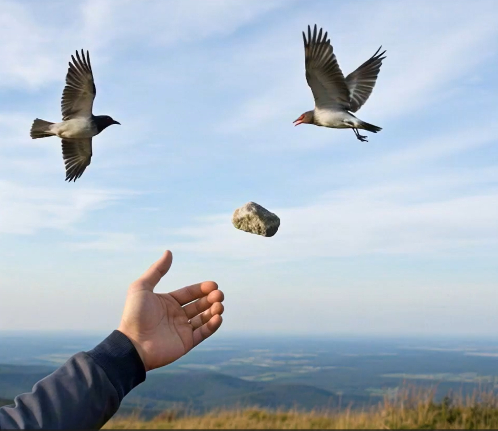

一石二鸟
This idiom means "to kill two birds with one stone." Click the audio below to learn the pronunciation.
AI-Generated Idiom Illustration
Illustration depicting the meaning of the idiom "一石二鸟."
How the Image Was Generated
- The idiom "一石二鸟" was input into an AI image generation tool 文心一言.
- The AI was prompted with a detailed description of the idiom's meaning and symbolism:远景，空中有两只鸟在飞，一只手从左下方扔出小石头。"
- Multiple iterations were made to refine the visual representation.
Watch the AI imagination video for "一石二鸟"
In the imagination of AI, "一石二鸟" means a stone thrown to two birds, and turns into another bird. Who can imagine the meaning of this idiom after 100 years? Maybe then people will acknowladge that "一石二鸟" means a stone turned into a bird.
Additional Elements
This webpage uses various document-level elements to enhance its structure and readability:
- Highlighted text for emphasis.
- Italicized text for subtle emphasis.
- Bold text for stronger emphasis.
- Abbreviations like AI for clarity.
- Ruby text for annotating Chinese characters with 拼音.
- Superscript 2 and subscript H2O for formatting scientific expressions.